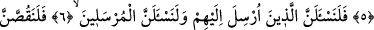
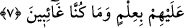

GEÇMİŞ ÜMMETLERİN HELÂKİ
4. Nice memleketler var ki biz onları helâk ettik. Azabımız onlara geceleyin
yahut gündüz istirahat ederlerken geldi.
5. Azabımız onlara geldiğinde çağırışları, “Biz gerçekten zalim kişilermişiz”
demelerinden başka bir şey olmadı.
6. Elbette kendilerine peygamber gönderilen kimseleri de, gönderilen
peygamberleri de mutlaka sorguya çekeceğiz!
7. Ve onlara (olup bitenleri) tam bir bilgi ile mutlaka anlatacağız. Biz, onlardan
uzak değiliz.
“Nice kentleri helâk ettik.”
“Nice” kelimesi, çokluk ifâde eder. Bu cümlenin mânâsı: “Bir çok kentlerin helâkini
murad ettik.” demektir.
Lut kavmi gibi “gece yatarlarken yahut” Şuayb (a.s.)’ın kavmi gibi “gündüz
uyurlarken azabımız onlara” o kentlerin halkına “geliverdi.”
Haddadî der ki: Geceye, “beyât” denilmiştir. Çünkü bu kelime (gecelemek),
gölgelenmenin zıddı bir anlam taşır. Gecelemek, uykuda veya uyanık halde iken geceyi
idrak etmektir.
Farsça tefsirde şöye denilmiştir: Bu iki vaktin tahsisi, dinlenme ve istirahat zamanı
olması, azap tasavvuru ve beklentisi olmaması sebebiyledir. Gözlenmeyen bir nimet
nasıl daha güzel ve tatlı olursa, beklenmeyen belâ/sıkıntı da daha zor ve daha güç olur.
5. Azabımız onlara geldiğinde çağırışları, “Biz gerçekten zalim kişilermişiz”
demelerinden başka bir şey olmadı.
“Azabımız onlara geldiğinde” Azabımızın işaretleri ortaya çıktığı zaman, onların hep
birlikte: “Biz gerçekten zalimlermişiz!” demelerinden başka bir duâları” ve niyazları
“kalmadı.” Bu duâları, büyük bir üzüntü, pişmanlık ve kurtulma ümidiyle onların